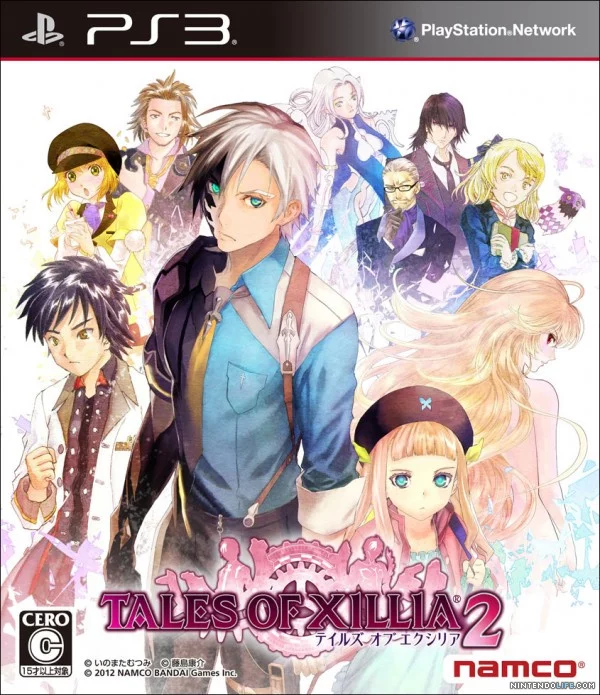

テイルズオブエクシリア2
 2012年11月1日発売プラットフォーム：PS3
シリーズ第14作目。
前作『テイルズオブエクシリア』の1年後を描いた続編にあたる作品。本作では選択肢がストーリーの鍵を握っている。様々な場面で選択を迫られ、その選択によってエンディングが分岐していく仕様。状況によっては制限時間が設けられた選択肢も存在しており、ストーリーの緊迫感を体験できるようになっている。なお、エンディングにはバッドエンドも存在している。戦闘システムは前作のものとほぼ同じだが、爽快感が増しスピーディな戦闘になるような改良がなされている。また、親密度システムが搭載されており、前述した選択肢も親密度を左右する要素となっている。
本作はシリーズ初のCERO：C（15歳以上対象）の作品であり、流血表現や残酷描写が他作品と比べて顕著である。加えてストーリーもシリーズで1、2を争うほどダークなものになっており、好き嫌いが分かれそうな仕上がりとなっている。また、主人公はテイルズオブシリーズ中では珍しく、『ポケットモンスター』シリーズや『ドラゴンクエスト』シリーズなどによく見られる“喋らない主人公”である。2周目からは選択肢を選んだ際にボイスを再生する／しないを選べるため、その印象を薄めることも可能ではある。
ボイスのON／OFFをプレイヤーに委ねるのは、主人公を１キャラクターとして見るか、プレイヤーの分身として見るかを選択させるためではないかと考えた。